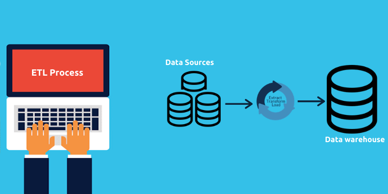

Alzheimer's Disease Analysis
This project uses machine learning to analyze an Alzheimer's disease dataset, aiming to identify key factors and build predictive models for early detection.

Heart Disease Analysis
This project analyzes a heart disease dataset to identify key risk factors and build predictive models for estimating an individual's likelihood of developing heart disease.

COVID-19 Fatality Prediction
This project aims to develop a machine learning model that predicts whether a Covid-19 patient is at high risk based on their current symptoms, status, and medical history. The model helps identify high-risk patients for better medical intervention.
Hospital Readmission Prediction
This project aims to to leverage machine learning to build a predictive model that can identify patients at high risk of readmission early, particularly those diagnosed with diabetes.
Insurance Claim Risk Modeling
This project builds a two-phase risk model, unsupervised anomaly detection followed by supervised classification, to identify high-risk or potentially fraudulent healthcare insurance claims.

Customer Segementation Analysis
This project focuses on customer segmentation using clustering analysis. The insights gained helped define marketing personas and personalize campaigns.
Clustering Analysis of Vehicles
This project uses clustering algorithms to identify natural groupings in CO2 emissions within a vehicle dataset, based on features like engine size and fuel efficiency.
Crypto Data Analysis
This project analyzes cryptocurrency market data aiming to identify trading signals or patterns. Clustering modeling is used to gain insights into the dynamic cryptocurrency market.

Credit Risk Analysis
This project aims to build models for predicting the credit risk of individuals or entities using historical credit data. The goal is to develop classification models that differentiate between borrowers likely to repay their loans and those likely to default.
Amazon Vine Analysis
This project analyzes Amazon Vine program data, where trusted reviewers post opinions about new and pre-release items. The aim is to compare Vine reviews to non-Vine reviews, focusing on their helpfulness, rating trends, and potential biases.

Crowdfunding ETL
This project aims to build models for predicting the credit risk of individuals or entities using historical credit data. The goal is to develop classification models that differentiate between borrowers likely to repay their loans and those likely to default.